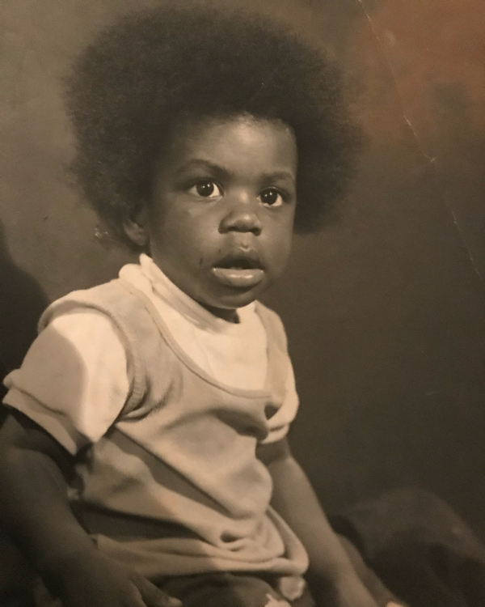
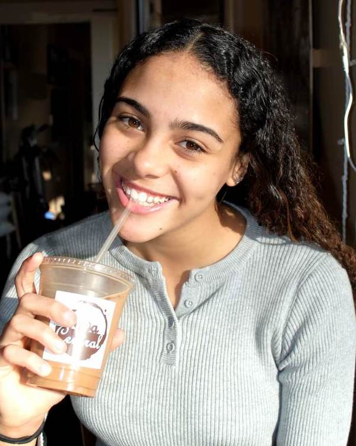

Home
About
Extracurriculars
Gallery
Contact
Get In Touch
Hover on the person and click on a social media icon to reach out via that platform.

Anthony Saunders
Some text goes here
Sheila Saunders
Some text goes here
McKenna Saunders
Ohio State University c/o 2022
Kaden Saunders
Westerville South HS c/o 2022

Marissa Saunders
Westerville South HS c/o 2023